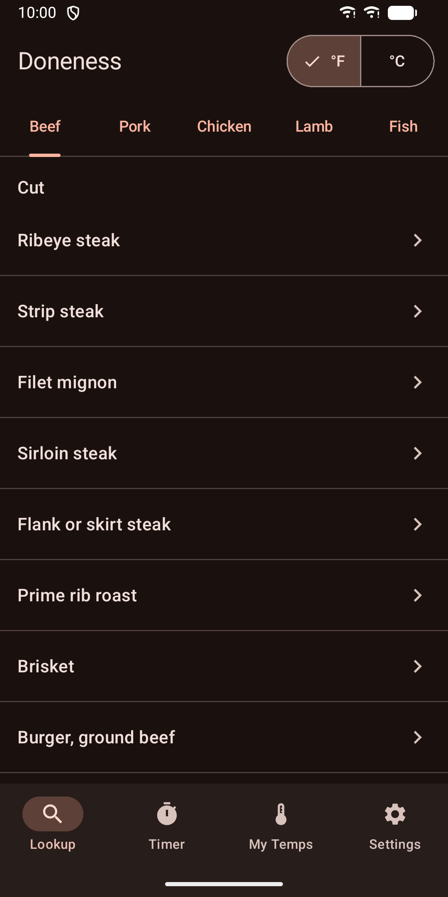
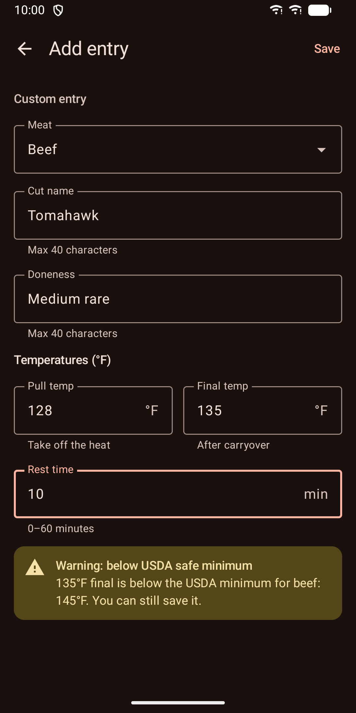

Steak-Garstufen & Timer
Zieltemperaturen für Steak, Schwein, Huhn, Lamm und Fisch, mit Ruhe-Timer







Über die App
Wissen, wann das Fleisch vom Grill muss. Wähle Fleischsorte, Stück und gewünschten Gargrad. Du bekommst drei Werte in großer Schrift: - Herausnahme-Temperatur: wann das Fleisch von der Hitze muss - Endtemperatur: wo es nach dem Nachgaren landet - Ruhezeit: wie lange es vor dem Aufschneiden ruhen sollte Mit einem Tipp startest du den Ruhe-Timer. SICHERHEITSHINWEISE Temperaturen nach Kochstil, etwa ein medium rare Burger oder eine saftige Hähnchenbrust, können unter dem sicheren USDA-Minimum liegen. Die App zeigt sie trotzdem an, markiert sie aber mit einer deutlichen Warnung und nennt daneben das USDA-Minimum. ANPASSBAR Du magst dein Ribeye etwas roher? Ändere die Temperaturen für jedes eingebaute Stück. Füge eigene Stücke hinzu, zum Beispiel Picanha oder Pulled-Pork-Schulter. Jede Änderung setzt du mit einem Tipp auf den Standard zurück. Eigene Temperaturen bekommen dieselbe USDA-Warnung. EIN EINFACHER TIMER Ruhe-Voreinstellungen von 3 bis 20 Minuten und Wende-Voreinstellungen von 1 bis 4 Minuten. Am Ende ertönt ein Alarm, und der Bildschirm bleibt während des Countdowns an. Du verlässt die App? Mit einem Tipp übernimmt die Uhr-App deines Handys den Countdown. WIDGET FÜR DEN STARTBILDSCHIRM Deine letzte Abfrage bleibt auf dem Startbildschirm: Stück, Gargrad, Herausnahme- und Endtemperatur. Ein Tipp und du bist wieder in der App. GEMACHT FÜR DEN GRILL - Große Schrift und große Schaltflächen für fettige Finger - °F oder °C, wird gemerkt - Heller und dunkler Modus passend zum Handy - Layouts für Smartphone und Tablet; auf Tablets stehen Tabelle und Timer nebeneinander - Unterstützung für Screenreader DATENSCHUTZ - Die App hat keine Internetberechtigung und kann nicht online gehen - Kein Konto, kein Tracking, keine Analyse - Deine eigenen Temperaturen sind in der Android-Sicherung enthalten. Sonst verlässt nichts das Gerät. KAUF Die App ist ein kostenpflichtiger Download. Alle Funktionen sind nach dem Kauf enthalten. Es gibt keine In-App-Käufe. Enthält Rind, Schwein, Huhn, Lamm und Fisch. Die sicheren Mindestwerte basieren auf USDA FSIS. Die Temperaturen sind nur Richtwerte; nutze immer ein kalibriertes Thermometer.